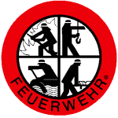

Easy to use distributed application framework for .NET, Mono and Xamarin.Android.
Easy to use distributed application framework for .NET, Mono and Xamarin.Android.
Zyan is very easy to learn and use. It provides clean intuitive API (see examples below) for hosting and accessing remote components.
Zyan runs on Windows, Linux, MacOS and Android platforms supporting .NET 3.5+, Mono 2.10+ or Mono for Android 4.7+ frameworks.
Supports transparent realtime traffic compression and encryption, even on mobile devices. Doesn't require digital certificates.
All you need is plain .NET classes and interfaces: no ServiceContract/OperationContract attributes, no MarshalByRefObjects are necessary (see more details below).
Supports TCP, HTTP and Named pipes natively on most platforms. Extensibility model allows plugging any custom transport protocols.
Supports bidirectional TCP communication through client-side NAT and firewalls.
Supports LINQ queries to the remote components. Allows passing serialized LINQ expressions over network and generating anonymous classes on demand.
Plug in custom transport protocols, session manager, authentication provider, and more. Build loosely coupled client-server systems using Zyan and MEF.
Distributed events are as easy as button_Click in Windows Forms applications. Distributed Event-Based Components (EBC) are supported out-of-the-box.
Zyan is able to host component that matches an interface, but doesn't implement it.
Zyan code is extensively covered with unit tests and integrational tests. Integrational tests are executed on Windows and Linux using Mono.
Zyan Framework is used in commercial enterprise applications. Check out the «Who uses Zyan Communication Framework» section below.
Our community provides free technical support in English, German and Russian. Most of your questions are answered within hours!
Comprehensive documentation covers all aspects of Zyan API. Check out source code repository for several example application.
Zyan is distributed under the terms of MIT license. It can be used in any applications, including closed-source and commercial.
 International Risk Partnership
is an independent consultancy. We're using the Zyan Framework
to connect several parts of our suite of Risk Management products together, to give our users maximum
flexibility in deployment. We've deployed elements locally, across a LAN and even on Amazon AWS (for
instance, connecting from UK to Australia) without issue using TCP duplex connections.
International Risk Partnership
is an independent consultancy. We're using the Zyan Framework
to connect several parts of our suite of Risk Management products together, to give our users maximum
flexibility in deployment. We've deployed elements locally, across a LAN and even on Amazon AWS (for
instance, connecting from UK to Australia) without issue using TCP duplex connections.
Of particular interest to us and to our clients is the ability to communicate encrypted data quickly – vital for our line of business.
Typically we have one or more control applications using duplex TCP to a remote server running our Data Manager. This in turn connects to our Central Logic via IPC. The Central Logic implements a queue and multi-threaded engines thus releasing the Data Manager quickly to prepare the next call.
In summary we use:
Trying to use TCP Remoting without the Zyan Framework would never have got off the ground – just glad we came across it. Also, we have received excellent service and support with even the most inept questions – thanks to you both for this!
– Dave Grafton
2013
ULTIMA Businessware is a software development company based in Moscow, Russia. Our flagship product is a large-scale enterprise resource planning system, and the current development version runs on top of Zyan Framework.
We have also integrated duplex TCP channel, apart from Zyan Framework itself, into stable version of ULTIMA ERP to enable reliable server callbacks for the clients working behind NAT and firewalls. This version is already delivered to our current clients, mostly large retail stores in several different regions of Russia. We use pretty much every feature Zyan Communication Framework has to offer, including
– Alexey Yakovlev
2013
 Fire-fighting departments in Germany use Zyan-powered application to control the state of the fire-fighting vehicles (sorry, no website yet).
The software has a client-server architecture. Each fire truck sends analog radio signals to headquaters. These signals are decoded using a third party hardware component at a centralized server. Server gets state through a decoder and sends to all clients. At any client site, the information worker can create a dashboard of all fire trucks he wants to monitor. The following Zyan features are used:
Furthermore i want to thank Rainbird for his great support. Many thanks to you, Rainbird.
– Caldicot
2012
We are using Zyan for our Inhouse-Development of an ERP-System. Long time ago we are using a OpenSource ERP, but we have Special Needs and the "old" System wasn't develop again.
So we start on January 1, 2013. with a new Project. Now in December will will release our first Version to do the inventure. We plan to Change the ERP complete at end of year 2014. Here some Highlights:
Thank you very much for your good work and helpfull support.
– Michael Kolowicz
2013
Zyan Drench is a simple yet very entertaining game developed using Zyan Communication Framework.
Game board is a random picture of size 15x15. Start from the top-left corner of the board. Select a new color for the top-left pixel, and all adjacent pixels of the same color will be painted over with the new color. The goal is to drench the whole board with your own color. As of February 2014, Zyan Drench is installed on more than 15,000 devices.
Zyan Drench has several modes: play against Android phone (with adjustable skill level), play solo (classic single-player mode) and network game over Wifi. It is completely ad-free and open source, hosted at https://drench.codeplex.com and https://github.com/yallie/drench.
The game uses the following features of Zyan library:
– Kind regards, yallie
2014